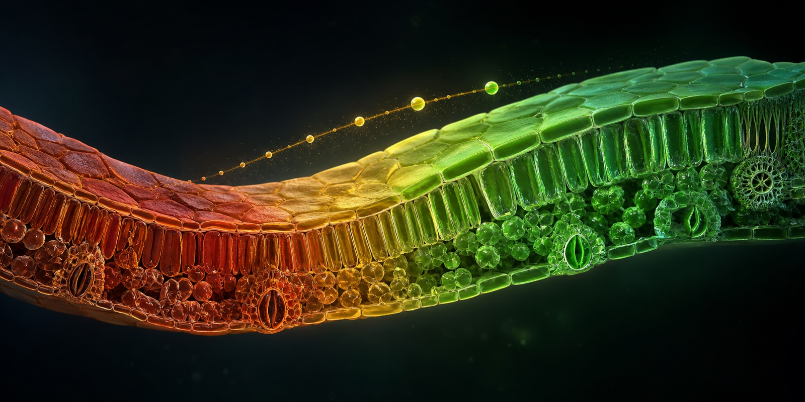
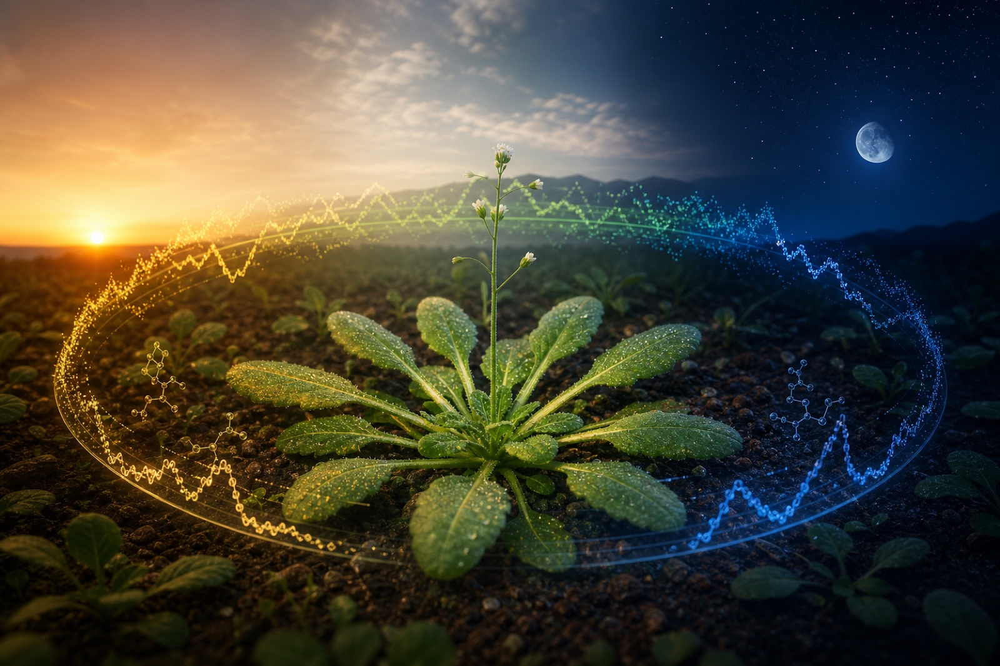

干旱 → 复水T+00h恢复不是倒放，而是新状态
细胞先进入干旱状态；复水后沿新的恢复轨迹重组，实验结果证明方向一致。
后稷把单细胞、空间、bulk 与表型观测压缩为同一个潜在世界状态 Sₜ；再把环境、剂量、时长和基因型编码为行动 Aₜ。改变行动，模型就在同一个“现在”上展开不同未来，并同时给出细胞、组织与性状层的结果分布。
这不是从输入直接跳到答案。后稷先建立可持续更新的世界状态，再让行动驱动随机动力学向前运行，最终把同一条潜在轨迹解码到多个生物尺度。
将单细胞、空间转录组、bulk、表型与扰动记录映射到共享潜在坐标。
分离真实生物状态与物种、器官、平台、批次等观测过程。
把干旱、复水、冷胁迫、压实与基因过表达作为可组合行动序列。
把未来轨迹解码为可测量的动态、细胞组成、组织响应和器官表型。
同一个现在，换一个行动，就应该生成另一条自洽未来。后稷预测的是随时间演化的状态分布，并同时报告不确定性，而不是只为某个终点拟合一个答案。
选择不同环境或基因行动，世界状态沿不同轨迹向前演化；细胞变化逐级传递到组织响应与最终表型。

干旱 → 复水T+00h细胞先进入干旱状态；复水后沿新的恢复轨迹重组，实验结果证明方向一致。

昼夜节律 · 24hZT 00连续推演时钟基因的相位与振幅，实验结果证明预测轨迹与实测节律吻合。
同一基因干预在正常供水与干旱下产生不同表型，实验结果证明其胁迫特异性。
同一条潜在未来被解码为细胞状态、组织构成和器官性状；不同尺度不再是彼此割裂的结果。
从受压缩的胁迫状态穿过过渡区，细胞群落向新的稳态重新组织。
相位和振幅共同定义植物在时间中的状态，隐藏时间点也能被连续还原。
后稷的知识边界固定在 2022 年。时间轴右侧的五项实验发生在这一边界之后，它们检验的不是数据重构，而是模型能否从已知世界状态向未知未来正确推进。
复水不是干旱倒放，基因作用依赖环境，高阶组合也不是简单相加。实验结果检验的是这些反事实未来的方向、时序与交互。
五组实验把世界模型的潜在轨迹落到相位、方向、组织构成与器官表型上，形成从世界状态、行动推演到实验读出的完整闭环。
| 任务 | 公开数据 | 验证重点 |
|---|---|---|
| 昼夜节律 | GSE248801 | 隐藏 ZT 时间点、核心时钟基因相位与振幅。 |
| 水稻压实 | GSE251706 | 根系细胞状态与组织组成的胁迫响应。 |
| 干旱复水 | GSE220278 | 恢复轨迹是否区别于简单时间反演。 |
| FRO6 叶片干旱 | GSE290214 | 基因过表达的胁迫依赖表型。 |
| 玉米冷胁迫 | GSE299259 | 跨物种冷响应方向与组织层读数。 |
项目相关机构覆盖生命科学、人工智能与植物研究，为世界模型的构建与实验验证提供跨学科视角。
The Chinese University of Hong Kong
研究机构
SStanford, California
研究机构
YNUYunnan University
研究机构
合作交流、学术讨论与项目咨询